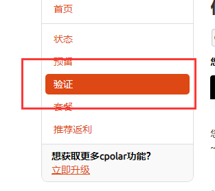
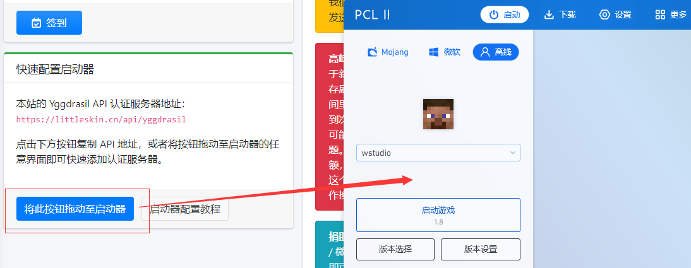
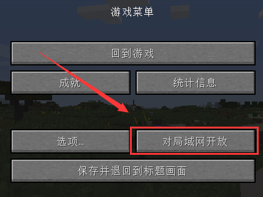
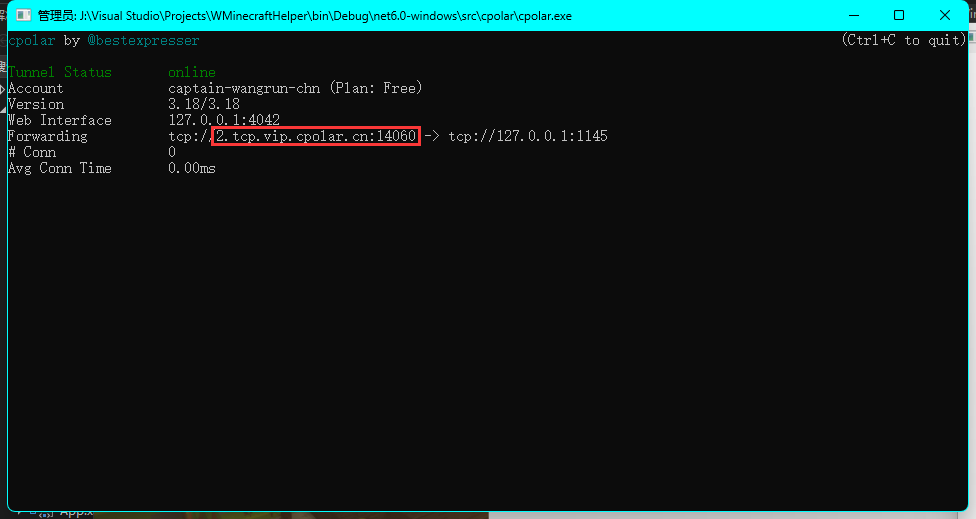
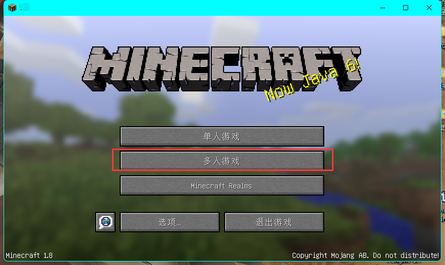
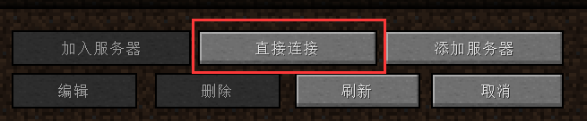

如何创建并加入房间
本人不太会设计，所将就看看吧
1.打开 cpolar 官网，有账号就登录，没有就注册，登录后点击左侧的“验证”

2.点击复制
3（如果是正版可以跳过这一步）.打开LittleSkin，登录或注册，然后把按钮拖到启动器，让联机的好友也执行这一步

4.启动游戏，进入世界，在点击“对局域网开放”，把聊天框中的那一串数字填到 WMCH 的 “端口”中，然后“token”填刚刚在网站里的复制的东西

5.点击“启动隧道”
6.如果你要分享到聊天大厅，那么填写信息，地址就是像图中圈住的东西（注意，没有前面的tcp://），点击“创建并推广”，然后其他人就可以在联机大厅里看到你的房间

注：如果你只是和朋友一起玩，那么第6步可以省去，直接把地址（↑）分享给好基友，然后看下面 ↓
如何加入房间
如果你在聊天大厅里看到的，那么点击“更多”，复制下面的地址，然后执行下面的操作
如果你是朋友给你的地址，也复制一下，然后执行下面的操作
1.打开游戏（废话），点击“多人游戏”，“直接连接”，输入地址，然后就可以和好基友van you see了

